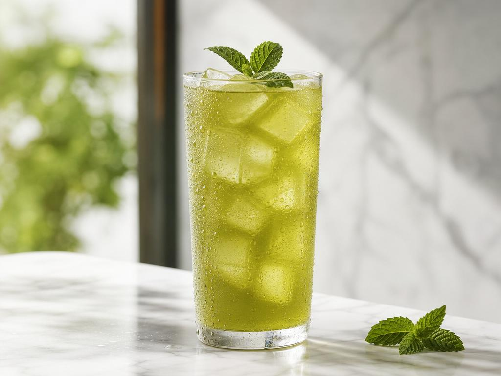
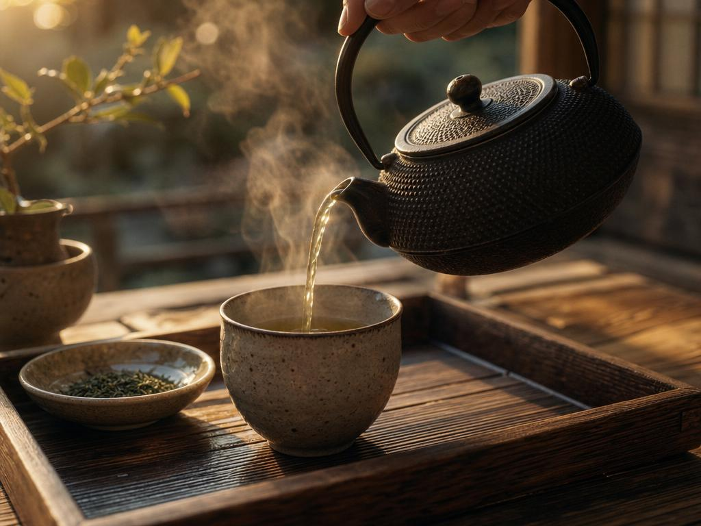
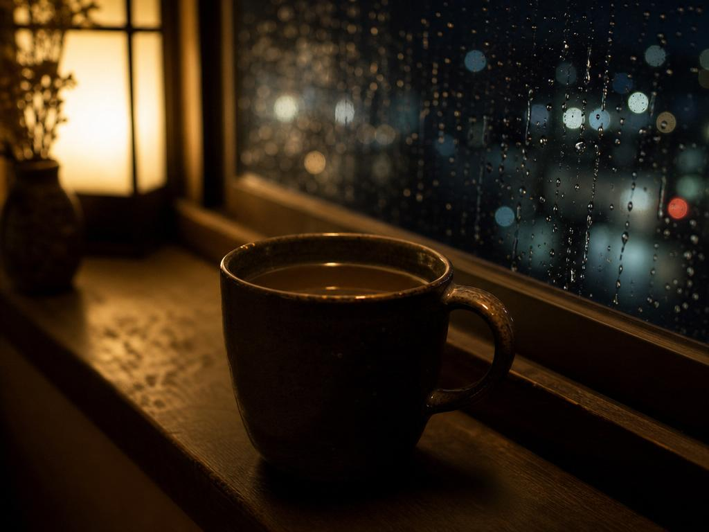

One leaf · three thousand years
Steep slower. Live greener.
The calmest caffeine in nature, and the most studied plant in your kitchen. This is green tea, taken seriously.
The ledger
What one cup quietly does
Eight effects, in order of evidence. No miracle claims — just what decades of research keep finding, cup after cup.
Calm focusBest studied
L-theanine, the calming amino acid unique to tea, rides alongside caffeine and rounds off its edges — alert, unhurried attention that holds for hours.
Cell defence
EGCG and its catechin family — the antioxidant compounds concentrated in green tea — shield cells from the oxidative wear of ordinary living.
A steadier heart
Habitual drinkers show lower LDL and better vascular function — the strongest signal in the research.
A faster idle
Catechins nudge the resting metabolic rate upward, helping the body prefer fat as fuel.
Clearer skin
Polyphenols, the plant compounds behind tea's bitterness and its benefits, temper the low-grade inflammation that dulls skin — over weeks, not mornings.
Gentler glucose
Taken with meals, green tea blunts the sharp rise and fall that follows heavy carbohydrates.
A settled gut
Tea polyphenols feed the useful half of your microbiome and calm the irritable half.
The long game
In the largest population studies, daily drinkers simply live longer. It keeps correlating.
A day in five cups
The day has a rhythm. So does the leaf.
Different hours ask different things of you. Match the steep to the moment.
First light
Trade the espresso jolt for a slow climb. The caffeine arrives; the jitters don't.
Pour Sencha
Deep work
A whisked bowl before the hardest task of the day. Matcha is focus you can drink.
Pour Matcha

The dip
Cold-brewed over ice, it lifts the afternoon fog without touching tonight's sleep.
Pour Iced sencha

The switch-off
A shaded, sweeter leaf marks the border between work and evening.
Pour Gyokuro

Last warmth
Roasted, toasty, nearly caffeine-free. The day ends the way it began: with a cup.
Pour Hojicha
The craft
Don't guess. Steep.
Pick a leaf. The timer knows the temperature, the minutes, and the moment to stop — watch the cup deepen as it works.
Cool the water
Boil, then wait. This leaf wants 80°C — boiling water scalds it into bitterness.
Measure the leaf
2g — one teaspoon per 200ml. More leaf, shorter steep — never the reverse.
Let the timer finish
Steep for 2:00, lift the leaves, drink. The same leaves will give you two more infusions, each quieter than the last.
The slow letter
One good letter. Steeped, never rushed.
One considered note on leaves worth finding, steeps worth timing, and the science worth believing. Nothing else.
Free forever · one honest note · leaves with one click